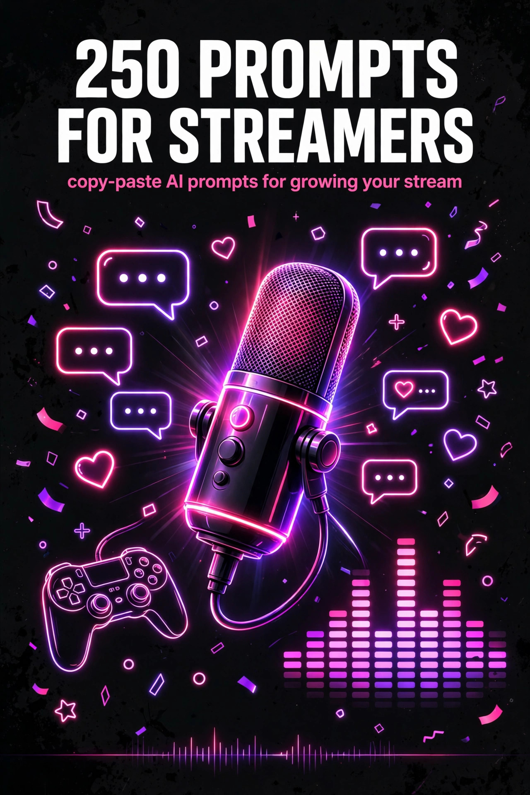

BITSTREAM · ZERO FILLER. ALL VALUE.
250 Prompts for
Streamers
250 copy-paste AI prompts to grow your stream.
Open a free AI tool, paste, fill in the blanks, done.
NICHE PACK · $10.99
How to use this pack (60 seconds)
- Open a free AI tool — ChatGPT (chatgpt.com), Claude (claude.ai), or Gemini (gemini.google.com). No paid plan needed.
- Copy any prompt and replace the [BRACKETED] parts with your stream's details: your game, your size, your schedule.
- Be specific. Viewer count, niche, platform, goals — specifics in, quality out.
- Treat the first answer as a draft. Reply with "make it punchier," "shorter," or "more options" until it's right.
- Batch it. Spend 20 minutes before stream week generating titles, tweets, and clip captions in one sitting — then just stream.
Rule 1 — You're the show, AI is the crew. Use these prompts for the planning, writing, and busywork around streaming — the personality on camera is still 100% you.
Rule 2 — Never fake it. Don't use AI to fake viewership, engagement, or testimonials. Real community compounds; fake numbers get you banned.
Rule 3 — One experiment at a time. Don't overhaul your whole stream tonight. Pick one prompt — a title, a clip format, a schedule tweak — and test it for a week.
1 · Stream Ideas & Series Concepts
Never stare at the "Go Live" button with no plan again — ideas, series, and events that give viewers a reason to come back.
PROMPT 001
Weekly series concept generator
I stream [Valorant] on [Twitch], averaging [40 viewers]. My vibe is [chaotic-funny, high energy]. Generate 10 weekly series concepts I could run — each with a name, a one-line pitch, and why it would make someone hit Follow.
PROMPT 002
Recurring segment brainstorm
Give me 15 recurring stream segments for a [Just Chatting] streamer with [~200 viewers]. Mix quick bits (under 5 minutes) and longer features. For each: name, how it works, and what chat does during it.
PROMPT 003
Chat-picked game roulette
Design a "chat picks my game" stream format for [a variety streamer]. Include: how chat votes, how to handle troll picks, 3 variations to keep it fresh weekly, and a title for the series.
PROMPT 004
Sub-goal event planner
I'm at [87 subs] and want a sub-goal event at [100]. My community likes [horror games and punishment challenges]. Plan the event: milestone rewards at 90/95/100, a hype-building countdown week, and what happens on event night hour by hour.
PROMPT 005
Viewer challenge night
Plan a viewer-challenge stream where chat gives me handicaps in [Fortnite]. Give me 20 challenge ideas ranked from funny to brutal, rules for how chat submits them (channel points? donations?), and how to keep it fair and fun.
PROMPT 006
Throwback stream idea
I want to do a nostalgia stream playing [old RuneScape / classic WoW]. Write the concept: hook for the title, 5 talking points about the game's history my chat will argue about, and 3 interactive moments (polls, quizzes) to run during it.
PROMPT 007
Collab stream format
I'm planning a collab stream with [2 other small streamers, similar size] in [Among Us-style social deduction]. Design the format: roles, scoring across [3 hours], how we handle 3 chats at once, and a shared title we can all use.
PROMPT 008
IRL stream concept
I'm doing my first IRL stream: [exploring downtown at night with a phone gimbal]. Plan it: a loose route/shot list, 5 chat interaction games I can run on the move, safety checklist, and what to do if the stream drops.
PROMPT 009
Speedrun & achievement hunt plan
I want to start achievement hunting in [Elden Ring] on stream. Build a series plan: which achievements make good stream content vs. boring grind, a per-stream target structure, and how to make failed attempts entertaining.
PROMPT 010
Tier-list stream builder
Plan a tier-list stream ranking [every agent in Valorant]. Give me: the tier categories (make them funny and on-brand), 5 hot takes to seed debate, poll questions for chat, and how to handle the inevitable arguments.
PROMPT 011
"Teach chat" stream plan
I'm decent at [video editing] and want to do an educational stream teaching chat. Outline a [2-hour] lesson stream: 3 core lessons, live demo segments, Q&A breaks, and a free resource I can drop in chat at the end.
PROMPT 012
Blind playthrough picker
Help me pick my next blind playthrough. I like [story-driven RPGs, ~30-60 hours], my chat likes [backseating and lore debates]. Give me 5 game options with pros/cons for streaming each, and a poll I can run to let chat decide.
PROMPT 013
Mods vs. streamer showdown
Plan a "mods vs. me" event in [Rocket League]: format, teams, stakes (loser does [a punishment picked by chat]), hype package (title, announcements), and how to make it a recurring monthly event.
PROMPT 014
Story-game arc planner
I'm starting [Baldur's Gate 3] as a [12-stream series]. Plan the arc: natural stopping points per stream, 3 "event streams" (big story beats to hype), spoiler rules for chat, and a series name.
PROMPT 015
Charity stream concept
I want to run a charity stream for [a local animal shelter], goal [$500] over [8 hours]. Plan it: donation incentives at every $50, 3 stretch goals, games/activities that fit the cause, and the announcement post.
PROMPT 016
12-hour stream survival plan
I'm doing my first [12-hour] stream for [my 1-year affiliate anniversary]. Build the full plan: hour-by-hour content blocks, meal/break schedule, energy management tips, milestone celebrations, and what to do if viewership dips at hour 8.
PROMPT 017
New game launch day plan
[GTA 6] launches [next month] and I want to be ready. Plan my launch-day stream: pre-launch hype content this week, title/thumbnail, what to do in the first hour to hook viewers, and how to stand out from the 10,000 other streamers playing it.
PROMPT 018
Viewer games night
Plan a weekly viewer-games night with [Jackbox / community Minecraft] for [~100 concurrent viewers]. Include: how viewers join, rotation system so everyone gets a turn, rules to keep it moving, and 3 variations for when the main game gets stale.
PROMPT 019
Reaction stream ideas
Give me 10 reaction-stream concepts that aren't just "watching YouTube." My niche is [gaming + internet culture], my take style is [sarcastic but good-natured]. Each with a title and what makes it different from everyone else's reaction content.
PROMPT 020
Creative stream formats
I want to try non-gaming creative streams: [digital art]. Give me 8 stream concepts (commissions, challenges, collabs), how to make art visually interesting on stream, chat participation ideas, and realistic expectations for viewership vs. gaming streams.
PROMPT 021
Fitness stream starter
I'm thinking about [morning workout streams, 30 min] as a second content pillar. Plan the format: workout structure that works on camera, chat participation (squat counters?), gear I need, and how to brand it separately from my gaming content.
PROMPT 022
Cooking stream plan
Plan a cooking stream making [smash burgers]. Include: camera setup tips for a kitchen, chat-voted toppings, timing plan so there's no dead air while things cook, and 3 funny "disaster backup" segments if I burn something.
PROMPT 023
AMA stream structure
I'm doing a [500-follower] AMA stream. Structure it: how to collect questions in advance, 5 seeded questions to start with, how to dodge questions I don't want to answer gracefully, and 3 interactive breaks so it's not just talking for 2 hours.
PROMPT 024
Lore deep-dive stream
Plan a lore deep-dive stream on [the Elden Ring universe]. Outline: 4 lore topics with the juiciest details, visual aids I should prep, debate prompts for chat, and how to keep non-lore-nerds entertained too.
PROMPT 025
Community tournament organizer
Organize a [16-player, single-elimination] community tournament in [Apex Legends, Arenas mode]. Give me: bracket structure, sign-up form questions, rules doc, prize ideas under [$50 total], and a broadcast plan (who casts, stream layout).
PROMPT 026
Seasonal event stream
Plan a [Halloween] special stream. Include: theme/decorations for the stream setup, 3 themed game choices with pros/cons, costume ideas that work on camera, chat costume contest rules, and a spooky title.
PROMPT 027
"First time" series planner
I want a recurring "first time playing [X]" series. Design the format: how to pick games, the 3-act structure per episode (hype, struggle, verdict), a scoring system for each game, and how to turn the best moments into clips.
PROMPT 028
Stream anniversary special
My [2-year] stream anniversary is in [3 weeks]. Plan the celebration stream: look back at [my first VOD, biggest clip, funniest fail], community awards with categories chat votes on, special guests, and a heartfelt (not cringe) thank-you moment.
2 · Titles, Thumbnails & Go-Live Announcements
The packaging that decides whether someone clicks — titles, go-live posts, and the words around your stream.
PROMPT 029
Clickable stream title writer
Write 10 stream titles for tonight: I'm playing [ranked Valorant, hardstuck Gold, trying a new agent]. Style: [funny, self-deprecating]. Under 60 characters each, no clickbait lies — every title must be true of the stream.
PROMPT 030
Title A/B test planner
I want to test which titles pull better. Design a 2-week experiment: 3 title styles to rotate [funny, hype, informative], what metrics to track, how to control for day/time, and how to decide a winner.
PROMPT 031
Thumbnail concept brief
Write a thumbnail design brief I can hand to my editor for a YouTube upload of [my funniest Valorant clutch compilation]. Include: 3 concept options, text overlay copy (3 words max each), facial expression direction, color scheme, and what NOT to do.
PROMPT 032
Go-live tweet templates
Write 5 go-live tweet templates I can rotate. My stream: [variety gaming, 7pm ET weekdays], my voice: [chaotic, meme-heavy]. Each under 200 characters, with a hook, the game, and a reason to click NOW.
PROMPT 033
Discord go-live announcement
Write a Discord go-live announcement for [a community Minecraft event night]. Include: what's happening, how to join, start time with timezone, and a ping etiquette note so I don't annoy people.
PROMPT 034
Instagram story go-live copy
Write 3 Instagram Story go-live slides: slide 1 hook, slide 2 what's happening, slide 3 swipe-up CTA. Tonight: [trying the new Fortnite season]. Casual, emoji-light, actually clickable.
PROMPT 035
TikTok go-live teaser script
Write a 20-second TikTok script teasing tonight's stream: [I'm attempting a no-death Elden Ring boss run]. Hook in the first 2 seconds, build tension, end with "live at [8pm ET]." Spoken-word style, no hashtags in the script.
PROMPT 036
Stream description writer
Write my Twitch stream description: I play [FPS and horror games], stream [Tue/Thu/Sat 7pm ET], community vibe is [welcoming, 18+ humor]. Include rules summary, socials, and a line that makes a first-timer want to stay. Under 150 words.
PROMPT 037
Category & tag optimizer
I'm streaming [a modded Minecraft series] on Twitch. Recommend the best category, 5 tags, and whether to use the "English" + niche tags. Explain the discoverability logic for each pick.
PROMPT 038
Raid welcome message
Write my raid welcome spiel: I'm a [cozy Stardew Valley] streamer, raids usually come from [bigger cozy streamers]. 30 seconds, warm, tells raiders what we're doing, gives them one easy way to join in.
PROMPT 039
Starting-soon screen copy
Write copy for my starting-soon screen: [5-minute countdown]. Include a rotating tip/message set (5 messages), socials plug, and today's stream teaser. Keep it skimmable — people read it for 10 seconds max.
PROMPT 040
BRB screen copy
Write 5 funny BRB screen messages I can rotate. My brand is [sarcastic gamer dad]. Each one line, clean enough for all ages, and one should plug my [YouTube] while I'm gone.
PROMPT 041
Stream-ending CTA script
Write my end-of-stream wrap-up script [60 seconds]: thank chat, recap the best moment, plug [tomorrow's stream + my TikTok], and raid someone with a raid message chat will actually copy. Warm, not salesy.
PROMPT 042
VOD title optimizer
I have a [3-hour] VOD of [my first Elden Ring Malenia kill after 47 tries] going to YouTube. Write 8 title options optimized for search AND click, plus a 2-sentence description with keywords.
PROMPT 043
YouTube upload package
Turn tonight's stream into a YouTube upload: [funny moments compilation, 12 minutes]. Write the title, description (with timestamps template), 10 tags, and a pinned comment. Target audience: [FPS gamers who don't watch Twitch].
PROMPT 044
Clip title writer
Write 10 titles for this clip: [I clutched a 1v4 in Valorant with 10 HP while my chat was screaming]. Punchy, under 50 characters, optimized for TikTok's feed. No spoilers that kill the payoff.
PROMPT 045
Emote name brainstorm
I need names for 6 new emotes: [hype, laugh, cry, rage, love, "oh no"]. My community calls me [Noodle] and the inside joke is [I always fall off the map]. Punny names tied to my brand.
PROMPT 046
Channel point reward namer
Name 12 channel point rewards for my stream. Costs from [100 to 50,000 points]. My content: [horror games]. Names should be on-brand and make the reward's effect obvious. Include 3 high-tier "event" rewards.
PROMPT 047
Sub badge tier namer
Name my subscriber badge tiers [1, 3, 6, 9, 12 months + 2 year]. Theme: [space/cosmic]. Each name should feel like a promotion and look good as a tiny badge label.
PROMPT 048
About panel header copy
Write headers + one-liners for 6 about panels: [About Me, Schedule, Rules, Specs, Socials, Support]. Voice: [friendly, a little unhinged]. Each header under 4 words, each one-liner under 20 words.
PROMPT 049
Schedule graphic copy
Write the copy for my weekly schedule graphic: [Mon/Wed/Fri 7pm ET — variety; Sun 3pm ET — community day]. Include a tagline, timezone note, and what happens if I cancel. Short enough to read on a phone screen.
PROMPT 050
Milestone hype post
I just hit [1,000 followers]! Write the announcement post for [Twitter/X]: grateful but funny, shout out [my mods by name], tease the [12-hour celebration stream], and end with a question to drive replies.
PROMPT 051
Comeback stream announcement
I'm returning after a [3-week] break [burnout]. Write the comeback announcement: honest without oversharing, hype for what's next [new series, new schedule], and a line that makes old viewers feel missed, not guilted.
PROMPT 052
Schedule change notice
I'm moving my streams from [weeknights] to [weekend afternoons] because of [a new job]. Write the announcement: clear new schedule, why (brief), reassurance for regulars, and a poll to find the best weekend slot.
PROMPT 053
New emote announcement
Write the announcement for 3 new emotes: [a hype emote, a bonk emote, a "press F" emote]. Describe what each looks like, when to use it, and run a mini "emote debut" moment I can do live.
PROMPT 054
Merch drop announcement
Write my first merch drop announcement: [a hoodie with my logo + inside joke "Certified Clutcher"], priced at [$45]. Build hype without being pushy, explain the design story, and include FAQ answers (sizing, shipping time).
PROMPT 055
Charity goal announcement
Write the announcement for my charity stream: cause [St. Jude], goal [$1,000], date [next Saturday, 12 hours]. Emotional but not guilt-trippy, clear on where money goes, and 3 incentive teasers.
PROMPT 056
Collab announcement post
Write the announcement for my collab with [@StreamerName, similar size]: what we're playing [a co-op horror game], when, why our communities will vibe, and a shared hashtag we can both use.
3 · Chat Engagement & Community Building
Turn lurkers into regulars and regulars into a community — the part of streaming no algorithm can do for you.
PROMPT 057
Icebreaker question bank
Write 30 icebreaker questions I can drop in chat during slow moments. My stream: [cozy Stardew Valley], audience mostly [18-30]. Mix funny, wholesome, and debate-sparkers. No politics, no trauma-dumping bait.
PROMPT 058
Prediction topic writer
Write 15 Twitch prediction topics for [ranked Valorant climb nights]. Each with 2-3 outcomes and a time window. Make them specific enough to be fun ("will I derank tonight?") not generic.
PROMPT 059
Poll question writer
Write 20 poll questions for my [variety] stream: 10 gameplay decisions [which agent, which map] and 10 just-for-fun community polls. Each poll needs 2-4 snappy options.
PROMPT 060
Lurker-to-chatter converter
I have [60%] lurkers. Give me 10 low-pressure ways to get lurkers typing their first message — no callouts, no guilt. Include 3 channel-point rewards designed for shy viewers.
PROMPT 061
New follower welcome ritual
Design my new-follower welcome ritual: what I say, a sound/alert pairing, and how chat participates. My brand is [chaotic-good gremlin energy]. Make it memorable but under 15 seconds so it doesn't derail gameplay.
PROMPT 062
Subscriber thank-you script
Write 5 subscriber thank-you variations I can rotate so it never sounds robotic. Include: new sub, resub [with streak callout], gifted sub, and Tier 2/3. Warm, quick, on-brand for [a hype FPS streamer].
PROMPT 063
Gifted sub reaction lines
Write 10 funny reaction lines for when someone drops a [10+ gifted sub bomb]. My humor is [self-deprecating, dramatic]. Short enough to say mid-fight without dying in game.
PROMPT 064
Raid welcome playbook
Build my raid playbook for a [cozy variety] streamer: the 30-second welcome spiel, 3 things to do in the first 2 minutes to convert raiders, what my mods should do, and a follow-up tweet template thanking the raider.
PROMPT 065
Slow-mode conversation starters
My chat moves fast during [hype moments] and slow during [grind segments]. Give me 12 conversation starters specifically for slow periods that don't require game knowledge — so new viewers can jump in.
PROMPT 066
Dead-chat rescue kit
It's [2am], [12 viewers], chat is dead. Give me a 10-minute rescue plan: 3 things to say, 2 interactive bits, 1 game I can switch to, and how to end stream gracefully if it doesn't recover — no shame spiral.
PROMPT 067
Hype moment call-and-response
Create 8 call-and-response chants for my community. My name is [Blitz], the community is called [the Blitz Brigade]. Short, spam-able, and fun to see flood chat after a big play.
PROMPT 068
Inside-joke catalog
Help me document our community inside jokes: [the "potato aim" incident, the cursed song request, the mod who always times out the wrong person]. Turn each into a one-line lore entry I can put in a Discord channel for new members.
PROMPT 069
Community nickname brainstorm
My viewers need a collective name. I go by [Nova], I play [space/sci-fi games], vibe is [wholesome-chaotic]. Give me 15 community name options with why each works, plus 3 to absolutely avoid.
PROMPT 070
Discord event ideas
Give me 12 Discord community event ideas beyond "movie night": game tournaments, creative contests, watch parties. For a server with [~300 members]. Each with a one-line pitch and how much mod effort it needs.
PROMPT 071
Discord rules writer
Write Discord server rules for my community: [gaming, 16+]. Cover: respect, spoilers, self-promo, NSFW, mod authority. Firm but friendly tone, under 200 words total, with 3 strike-policy options.
PROMPT 072
Welcome channel message
Write my Discord #welcome message: who I am [variety streamer, affiliate], what the server's for, 3 channels to check first, and one question new members can answer to introduce themselves.
PROMPT 073
Community spotlight post
Write a template for a weekly "community spotlight" post highlighting a viewer: [their clip, fan art, or just being awesome]. Include questions I can ask them and how to make a shy person feel celebrated, not exposed.
PROMPT 074
Fan art showcase script
Write my on-stream fan art showcase segment [5 minutes]: intro, how to react to each piece genuinely, what to say if the art is... not great, and how to encourage more submissions without begging.
PROMPT 075
Viewer of the month criteria
Design a "Viewer of the Month" program: fair criteria that don't just reward the biggest spender [chat activity, positivity, clips made], how to track it, the prize [custom emote + shoutout], and the announcement script.
PROMPT 076
Community game night organizer
Organize a monthly community game night: game [Fall Guys custom lobbies], sign-up method for [~40 players], rotation so everyone plays, rules doc, and a stream layout that shows the bracket.
PROMPT 077
Movie night poll + plan
Plan a Discord movie night: 5 movie options that fit [a horror-game community], a poll format, sync-watch method, chat rules during the movie, and 3 discussion prompts for after.
PROMPT 078
Giveaway plan (non-scammy)
Plan a [$25 Steam gift card] giveaway that grows the community without attracting bots. Include: entry method [active chatters only], duration, anti-alt-account measures, winner announcement script, and legal-ish disclaimer language.
PROMPT 079
Birthday shoutout system
Create a community birthday system: how viewers submit birthdays, what happens on stream [song, alert, chat spam], and a monthly birthday stream segment. Low effort for me, high delight for them.
PROMPT 080
Returning viewer re-engagement
Write 8 warm, non-awkward lines for when a regular returns after weeks away. My vibe: [genuinely happy, zero guilt-tripping]. Plus 3 things NOT to say ("where have you BEEN?!").
PROMPT 081
Toxic chat defuser lines
Write 10 defusing one-liners for when chat gets heated [ranked losses, game debates]. My style: [firm, funny, not preachy]. Each usable in under 5 seconds mid-game.
PROMPT 082
Backseat gaming boundary script
Write my backseating policy + the on-stream script for enforcing it. I play [puzzle/horror games where chat loves to spoil]. Three escalation levels: gentle redirect, firm warning, timeout — with exact wording for each.
PROMPT 083
Spoiler policy writer
Write a spoiler policy for my [blind playthrough of a story game]: what counts as a spoiler, the punishment ladder, how mods should handle "just asking" hints, and the announcement to read on stream day one.
PROMPT 084
Chat rules refresher
My chat rules are [6 months old] and chat has doubled. Write a fresh rules announcement: keep the 5 rules that still work, add 2 new ones for [clip-spam and self-promo], and a funny-but-clear way to present it on stream.
4 · Clip Strategy for TikTok, Reels & Shorts
Clips are your discovery engine — here's how to make them, title them, and turn viewers into followers.
PROMPT 085
Clip-worthy moment predictor
I stream [FPS games]. List 20 types of moments I should ALWAYS clip (clutches, fails, funny chat interactions...), ranked by viral potential, with a note on why each type performs on TikTok specifically.
PROMPT 086
Clip title + caption writer
Write 5 title + caption combos for this clip: [I accidentally team-killed my duo and he didn't notice for 2 minutes]. TikTok style: hook title, caption with CTA, and 5 hashtags. Funny, no spoilers.
PROMPT 087
TikTok hook script
Write the first-3-seconds hook text for a clip where [I hit an impossible trick shot]. Give me 8 hook variations — text overlay style, under 8 words each, designed to stop the scroll.
PROMPT 088
Clip hashtag set builder
Build 3 hashtag sets for my clips: one for [Valorant] gameplay, one for [funny moments], one for [IRL]. 5 hashtags each: mix of big, medium, and niche tags with the strategy behind each pick.
PROMPT 089
Clip series format designer
Design a recurring clip series format for me, like "POV:" or "day in the life." My content: [horror game reactions]. Give me the format name, the template structure, 5 example episodes, and why it's binge-able.
PROMPT 090
Clip posting schedule
Build a clip posting schedule: I can realistically post [1 clip/day]. Tell me the best times for [TikTok, Reels, Shorts] for a [US gaming audience], how to stagger across platforms, and what to do on days I don't stream.
PROMPT 091
Clip-to-stream CTA
Write 10 end-of-clip CTAs that convert TikTok viewers to Twitch followers. My stream: [weeknights 7pm ET, variety]. Each under 10 words, natural — not "follow for part 2" cringe.
PROMPT 092
Viral clip autopsy
One of my clips hit [500K views]: [a rage moment in a horror game]. Analyze why it likely worked: hook, pacing, relatability, sound. Then give me 5 ways to replicate the formula without repeating the exact clip.
PROMPT 093
Clip batching workflow
Design a weekly clip workflow: I stream [4x/week, 3 hours] and have [2 hours/week] for clips. Include: how to mark moments live, review process, editing checklist, and a template for briefing an editor later.
PROMPT 094
Clip editor hiring brief
Write a hiring post for a clip editor: my content [FPS highlights], output [7 clips/week, 30-60 sec], budget [$150/month]. Include: style references, turnaround expectations, revision policy, and 3 test-task ideas to vet applicants.
PROMPT 095
Clip thumbnail text writer
Write thumbnail text overlays for 8 clips: [clutch moments compilation]. Each 2-4 words, high contrast readable on a phone, curiosity-gap style. No clickbait that the clip doesn't deliver.
PROMPT 096
Clip comment reply bank
Write 15 reply templates for common TikTok comments: ["what's your twitch?", "you're cracked", "fake", "what settings?"]. Mix funny, helpful, and CTA replies. Each under 20 words.
PROMPT 097
Duet/stitch idea generator
Give me 10 duet/stitch concepts using other creators' content in [the FPS niche]. Each: whose content to engage with, the angle of my response, and why it benefits both of us. Respectful, not clout-chasing.
PROMPT 098
Trend-jacking clip ideas
The current TikTok trend is [a specific audio/trend]. Give me 7 ways to adapt it to my stream content [gaming clips] while the trend is hot — fast-turnaround ideas I can film/edit today.
PROMPT 099
Fail compilation concept
Plan a monthly "fails" compilation: [my worst Valorant whiffs]. Structure: intro hook, ordering (escalating), music pacing notes, title/thumbnail, and how to make failing look fun instead of embarrassing.
PROMPT 100
Wholesome moment compiler
Plan a wholesome-moments video: [viewers being kind, funny kid moments, community wins]. Give me the emotional arc, music suggestions, title, and 5 moments from a typical month worth saving for it.
PROMPT 101
Out-of-context clip series
Design an "out of context" clip series from my streams. My humor: [absurdist, quotable]. Format template, 5 example titles, posting cadence, and how to source the weirdest 5-second moments efficiently.
PROMPT 102
Clip performance review
Here's my last month of clip stats: [paste views, likes, follows per clip]. Analyze: which 3 formats overperformed and why, which 2 flopped and the likely reason, and what to double down on next month.
PROMPT 103
Cross-platform clip adapter
I post the same clip to TikTok, Reels, and Shorts but results vary. For a [funny gaming clip], write platform-specific tweaks: caption style, hashtag approach, and posting time for each of the three.
PROMPT 104
Clip pinning strategy
I can pin 3 TikToks. Which types should I pin: [my best clip ever, my stream schedule, my funniest fail]? Rank by conversion value and write the pinned-comment CTA for each.
PROMPT 105
Pinned comment CTA writer
Write 8 pinned comments for my clips that drive follows without begging. Rotate across: [stream schedule, question to drive replies, related clip link]. Each under 25 words.
PROMPT 106
Clip series naming
Name my recurring clip series. Content: [daily funny moments from ranked grind]. Give me 10 name options — searchable, brandable, and not already taken by a big creator (suggest how to check).
PROMPT 107
Sound/trend matcher
I have 5 clips ready: [clutch, fail, wholesome, funny chat moment, IRL]. Match each to a trending TikTok sound style [as of this month] and explain why the pairing works emotionally.
PROMPT 108
Clip length optimizer
My clips range [15-90 seconds]. Based on current TikTok/Shorts best practices, tell me the ideal length for [funny moments vs. clutches vs. story clips], where to cut, and how to spot when a clip is 10 seconds too long.
PROMPT 109
Posting time optimizer
My audience is [60% US East, 25% EU, 15% other]. Recommend daily posting times for TikTok/Shorts/Reels with reasoning, plus how to test and adjust over 2 weeks.
PROMPT 110
Follow-conversion CTA
Write 10 spoken CTAs for the end of my clips: "I stream [game] at [twitch.tv/name, weeknights]." Natural delivery, 5 seconds max when spoken, varied so repeat viewers don't tune out.
PROMPT 111
Follower conversion tracker
Build a simple tracker for clip-to-stream conversion: what to log per clip [views, profile visits, follows, stream viewers next 48h], a weekly review template, and how to calculate which clips actually grow the stream vs. just farm views.
PROMPT 112
VOD-to-clips repurposing plan
I have [20 hours] of VODs sitting unwatched. Build a repurposing plan: how to skim efficiently for moments, a quota [clips per VOD hour], prioritization (funny > clutch > wholesome?), and a 2-week schedule to work through the backlog.
5 · Monetization: Subs, Sponsors, Affiliates & Merch
Turn the grind into income — without selling out your community or sounding like an infomercial.
PROMPT 113
Sub perk brainstorm
Brainstorm 20 subscriber perks for a [~150-sub] [variety] streamer. Mix free-to-run perks (emotes, badges, sub-only streams) and low-cost ones. Rank by perceived value vs. my effort.
PROMPT 114
Tier 2/3 value stack
Nobody buys my Tier 2/3 subs. Design the value stack: what each tier gets at [$9.99/$24.99] that Tier 1 doesn't. My community: [FPS, competitive]. Make Tier 3 feel exclusive, not just expensive.
PROMPT 115
Donation goal writer
Write 5 donation goal descriptions for my goal bar: current goal [new microphone, $250]. Each version different tone: [funny, heartfelt, hype, straightforward, community-driven]. Under 30 words each.
PROMPT 116
Bits incentive ideas
Give me 12 bits/cheer incentive ideas for [horror game streams]: sound alerts, on-screen effects, dares. Price each [100-5000 bits] by how disruptive it is, and flag 3 that could backfire.
PROMPT 117
Sponsor pitch email
Write a sponsor pitch email to [a gaming chair company]. My stats: [800 avg viewers, 25K TikTok followers, 18-34 male-skewing audience]. Professional, concise, with a clear ask and 3 deliverable options. Under 200 words.
PROMPT 118
Media kit one-pager
Outline my one-page media kit: sections, what stats to feature [avg CCV, hours watched, demographics, socials], design notes, and 3 things small streamers always forget to include.
PROMPT 119
Rate card builder
Build a rate card for a [500-avg-viewer] streamer: sponsored stream segment, dedicated video, tweet, TikTok, logo on overlay for a month. Give me realistic price ranges and the logic behind each number.
PROMPT 120
Sponsor deliverable ideas
A [VPN company] wants to sponsor me. Give me 8 deliverable ideas beyond "read this script" — integrations that feel native to [a variety gaming stream] and that I'd actually enjoy doing.
PROMPT 121
Affiliate product picker
Pick 10 affiliate products that fit my stream: I use [a Shure mic, Elgato key light, Herman Miller chair] and play [FPS]. For each: why my audience would want it, where to mention it naturally, and realistic earnings math at my size.
PROMPT 122
Affiliate disclosure script
Write 3 natural affiliate disclosure lines I can say on stream: [when someone asks about my mic, in a gear command, during a sponsor segment]. Compliant, quick, doesn't kill the vibe.
PROMPT 123
Merch design concept brief
Write a design brief for my first merch: [a t-shirt]. Include: my brand elements [logo, catchphrase "GGs Only", pink/black colors], 3 concept directions, what to avoid (overdesigned gamer clichés), and notes for the designer.
PROMPT 124
Merch launch plan
Plan my first merch launch: [hoodie, $45], audience [~200 regulars]. Timeline [4 weeks out], teaser content plan, launch stream event, and realistic sales expectations so I don't over-order.
PROMPT 125
Merch pricing calculator
Help me price merch: base cost [$22/hoodie via print-on-demand], I want [$12 profit per unit]. Calculate the retail price, compare to what my audience [mostly students] will pay, and suggest 2 bundle options.
PROMPT 126
Limited drop FOMO copy
Write copy for a limited merch drop: [100 units, 2 weeks only]. Urgent but honest — no fake scarcity. Include: announcement post, 3 reminder posts, and "last 24 hours" copy.
PROMPT 127
Coaching offer builder
I'm [Immortal in Valorant] and want to offer coaching at [$30/hour]. Write the offer: what's included, who it's for, how to book, 3 testimonial prompts for past students, and how to mention it on stream without being salesy.
PROMPT 128
Service pricing for streamers
I want to sell [custom overlay packages] to other streamers. Help me price 3 tiers [basic $50, pro $150, full rebrand $400]: what's in each, turnaround times, revision policy, and where to find clients.
PROMPT 129
Patreon tier writer
Write 4 Patreon tiers [$3/$7/$15/$30] for my stream community. Each tier: name, 3-4 benefits, and a line explaining who it's for. Benefits must be deliverable by one person without burning out.
PROMPT 130
Discord paid perks
Design paid Discord perks for subs: [private channels, early VOD access, monthly game night]. Write the perk descriptions and a #sub-perks channel post that makes subscribing feel worth it.
PROMPT 131
Ad break script
Write a 15-second ad-break transition script that doesn't annoy chat. My style: [self-aware, funny]. Include 3 variations and what to put on screen during the [3-minute] break.
PROMPT 132
Sponsored segment script
Write a 60-second sponsored segment for [an energy drink brand] that feels like my content, not an ad. My stream: [late-night horror]. Include the required talking points [code, discount] woven in naturally.
PROMPT 133
Brand deal red-flag checker
A brand offered me [$200 for a dedicated stream + 3 tweets]. Give me a red-flag checklist: contract terms to question, payment terms, exclusivity traps, content approval rights, and 5 questions to ask before signing.
PROMPT 134
Contract term explainer
Explain these sponsor contract terms in plain English: [exclusivity, perpetuity, usage rights, morality clause, payment net-30]. For each: what it means, what's normal, and what's a dealbreaker for a small streamer.
PROMPT 135
Invoice template fields
List everything my sponsor invoice needs: [I'm a sole proprietor in the US]. Fields, payment terms language, late fee clause, and a professional email to send with it.
PROMPT 136
Streamer tax basics checklist
Give me a tax checklist for a US streamer earning [~$15K/year from subs, donations, sponsors]: what counts as income, what to track monthly, quarterly estimates explained simply, and 5 deductible expenses streamers forget.
PROMPT 137
Income stream diversifier
I currently earn from [Twitch subs only, ~$400/month]. Suggest 5 additional income streams ranked by effort vs. payoff for my size, with realistic first-month expectations for each. No "just go viral" advice.
PROMPT 138
Emergency fund target
My stream income is [$300-$900/month, irregular] and my expenses are [$1,800/month]. Help me set an emergency fund target, a monthly savings plan that flexes with income, and what to do in a $200 month.
PROMPT 139
Tip menu designer
Design a tip menu for my stream: [Just Chatting + variety]. 10 items from [$1 to $50]: funny low-tier, interactive mid-tier, 2 big "event" items. Each with a one-line description that sells it.
PROMPT 140
Goal bar event ideas
Give me 15 sub/donation goal bar rewards beyond "pie in face": [my community likes cosplay and cooking]. Rank by cost to me, hype generated, and clip potential. Include 3 milestone mega-events.
6 · Branding, Overlays & About Panels
Look like a pro before you are one — names, visuals, panels, and every word on your channel.
PROMPT 141
Streamer name brainstorm
Brainstorm 20 streamer names for me. I play [cozy games + horror], my real name is [Maya], vibe is [warm but chaotic]. Check-friendly (easy to spell, say, and search), no numbers, no "TTV" in the name.
PROMPT 142
Tagline writer
Write 15 taglines for my stream. I'm [a dad who speedruns retro games badly]. Funny, memorable, under 8 words. The kind of thing that goes under my name everywhere.
PROMPT 143
Brand voice definer
Define my stream's brand voice in a one-page guide: I'm [sarcastic but wholesome]. Include: 5 "we say / we don't say" examples, emoji usage rules, and how the voice changes across [stream, tweets, Discord].
PROMPT 144
Color palette picker
Pick a 4-color brand palette for my stream: I like [dark backgrounds, neon accents], my content is [FPS]. Give me hex codes, where each color goes (overlay, alerts, panels), and accessibility notes (contrast for text).
PROMPT 145
Overlay designer brief
Write a brief for an overlay designer: my stream [Valorant, facecam bottom-right], brand colors [purple/black], needs [webcam frame, event list, chat box, BRB screen]. Include style references, do's and don'ts, and budget [$100].
PROMPT 146
Alert copy writer
Write alert text for: follow, sub, gifted sub, raid, donation [$5+], hype train. My brand voice: [unhinged-but-lovable gremlin]. Each under 10 words, funny enough that chat quotes them.
PROMPT 147
About panel: bio
Write my About Me panel: I'm [27, former barista, now full-time-ish streamer], I play [story games and horror], streaming [2 years]. Warm, funny, 80 words, ends with one thing I want every visitor to know.
PROMPT 148
About panel: schedule
Write my schedule panel: [Tue/Thu 7pm ET, Sat 2pm ET], content per day, timezone note, and what "schedule subject to chaos" means in my case. Skimmable in 5 seconds.
PROMPT 149
About panel: rules
Write my chat rules panel: [be kind, no spoilers, no self-promo, 18+ humor]. Each rule one line with a tiny bit of personality. End with what happens on violation (3-strike system).
PROMPT 150
About panel: PC specs
Write my specs panel from this gear list: [RTX 4070, Ryzen 7 7800X3D, Shure SM7B, Sony ZV-E10]. Format it cleanly with affiliate-link placeholders, and add a "dream upgrade" line.
PROMPT 151
About panel: socials
Write my socials panel: [TikTok, Twitter/X, YouTube, Discord] with handles. One line per platform saying what I post there (so people follow the right one for what they want).
PROMPT 152
About panel: FAQ
Write my FAQ panel: answer [how old are you, what mic is that, can we play together, do you have a Discord, are you full-time] in my voice [dry humor]. 1-2 lines each.
PROMPT 153
Offline banner copy
Write my offline banner: what to show when I'm not live. Include: schedule, where to find me meanwhile [YouTube, TikTok], and one funny line so the offline screen isn't depressing.
PROMPT 154
Profile picture concept
Describe 5 profile picture concepts for me: I stream [horror games], brand colors [red/black]. Each: what's depicted, why it reads at 50px, and what to tell the artist. No text-heavy designs.
PROMPT 155
Banner concept
Describe 3 Twitch banner concepts: [cozy variety streamer, pastel colors]. Each with layout notes (where the name goes, what's behind it), mood, and one thing that makes it different from every other cozy banner.
PROMPT 156
Emote concept list
Give me 12 emote concepts: my brand [a frog VTuber]. Each: the emotion/action, why chat would spam it, and a 2-word name. Mix essential reactions + 4 brand-specific inside jokes.
PROMPT 157
Badge concept list
Design my loyalty badge progression: [1/3/6/9/12/24 months], theme [evolution: egg → tadpole → frog → frog king]. Describe each badge visually so an artist can draw it, plus a founder badge concept.
PROMPT 158
Transition stinger idea
Give me 5 scene-transition (stinger) ideas for my stream: brand [retro arcade]. Each: what the animation does in [under 1 second], sound pairing, and why it fits. Practical for an editor to make.
PROMPT 159
Intro video script
Write a 10-second stream intro video script: my name [PixelPete], tagline ["Retro, but make it chaotic"], what I play [retro + indie]. Shot-by-shot with timing and music direction.
PROMPT 160
Outro screen copy
Write my outro/ending screen: thanks message, tomorrow's teaser [blind RE4 run continues], socials, and the raid CTA. Readable in the 30 seconds it stays up.
PROMPT 161
Loading screen tips
Write 15 rotating tips for my loading/starting-soon screen: mix of [stream info, community lore, actual game tips for Valorant]. Each one line, fun to read while waiting.
PROMPT 162
Chat command list
Build my chat command list: [!socials, !specs, !schedule, !discord, !lurk, !hug, !clip]. Write the response text for each — short, useful, with personality. Flag which should be mod-only.
PROMPT 163
Bot command scripts
Write 8 custom bot command responses: [!aim (my sens), !rank, !song, !quote, !death (counter), !pizza (inside joke), !mods, !merch]. Each under 25 words, on-brand for [a chaotic FPS streamer].
PROMPT 164
Alert variation pack
Write 3 variations each for follow/sub/raid alerts so they don't get stale. Theme: [space]. Each variation a different joke angle on the same event. Under 8 words each.
PROMPT 165
Widget copy set
Write copy for my stream widgets: event list header, top donation label, sub goal header, chat box title. My theme: [cozy café]. Warm, tiny, consistent voice across all four.
PROMPT 166
Donation page copy
Write my Streamlabs donation page: headline, 2-sentence why-donate [supporting full-time dream], what donations fund [new PC fund], and a thank-you message donors see after. Grateful, never guilt-trippy.
PROMPT 167
Link-in-bio page copy
Write my link-in-bio page: [Twitch, TikTok, YouTube, Discord, merch, donate]. Order by priority for [converting TikTok viewers], one-line description per link, and a header that says what I do in 10 words.
7 · Collaboration & Networking Outreach
Growth is a team sport — pitches, DMs, and follow-ups that open doors without being cringe.
PROMPT 168
Collab pitch DM (peer)
Write a collab pitch DM to a streamer my size [~100 avg viewers]: I play [Dead by Daylight], they play [the same]. Specific idea [killer vs. survivor swap], low pressure, easy yes. Under 100 words.
PROMPT 169
Collab pitch (bigger streamer)
Write a pitch to a streamer 5x my size [500 avg viewers] for [a co-op horror game]. Lead with what I bring THEM [I edit clips for free, my community is active], not what I want. Respectful of their time, one clear ask.
PROMPT 170
Podcast guest pitch
Write a pitch to be a guest on [a small streaming podcast]. My angle: [I grew from 0 to affiliate in 4 months with a full-time job]. 3 talking points I'd bring, why their audience cares, under 150 words.
PROMPT 171
Tournament invite message
Write invites to [8 streamers] for my community tournament in [Apex Legends]. Include: date, format, prize [$100], what's in it for them [exposure, content], and a yes/no RSVP deadline. Two versions: peers and bigger names.
PROMPT 172
Co-stream proposal
Write a co-stream proposal for [a game launch — both of us playing day one] to [a streamer friend]. Cover: timing, who hosts the multi-stream link, shared title/hashtag, and how we split clip rights after.
PROMPT 173
IRL meetup organizer
I'm meeting [3 streamer friends] at [TwitchCon] and want to do an IRL stream together. Plan it: concept [convention floor chaos], gear split, schedule, safety buddy system, and the announcement post.
PROMPT 174
Networking follow-up message
I met [a streamer] at [TwitchCon] and we talked about [collabing on a podcast]. Write the follow-up DM: reference the conversation, one specific idea, propose a date, keep it light. Send within [48 hours] timing note.
PROMPT 175
Post-collab thank-you
Write a thank-you message after a great collab with [@name]: genuine, mentions a specific funny moment from the stream [the double KO], and plants the seed for doing it again without being needy.
PROMPT 176
Shoutout swap proposal
Write a shoutout-swap proposal to a similar-size streamer: how it works [raid each other once a week for a month], what's expected, and how to track if it's working. Fair, no-strings framing.
PROMPT 177
Raid train organizer
Organize a raid train with [5 small streamers] on [Friday night]. Plan: order, timing per stop [30 min], shared raid message, rules (no raiding and running), and a group chat template to coordinate.
PROMPT 178
Streamer Discord intro
Write my intro for a streamers' networking Discord: who I am [variety, 200 avg], what I play, what I'm looking for [collabs, clip feedback], and one interesting thing [I'm a former chef]. Confident, not braggy.
PROMPT 179
X networking reply bank
Write 12 genuine reply templates for engaging with bigger streamers' posts on X: [congrats on milestones, funny quote-tweets, thoughtful replies]. Real engagement, never "check out my stream" guy behavior.
PROMPT 180
Bigger-streamer commenting strategy
Build a 30-day plan for getting noticed by [3 specific bigger streamers] authentically: where to engage [their Discord, X, streams], what to say, frequency, and the line between visible and annoying.
PROMPT 181
Clip-and-tag outreach
Write the strategy + templates for clipping bigger streamers' funny moments and tagging them in [the FPS niche]: which moments are safe to clip, the tag message format, and how to turn one viral clip into a relationship.
PROMPT 182
Charity co-host pitch
Write a pitch to co-host a charity stream with [2 other streamers] for [a mental health charity]. Include: shared goal [$2,000], format [relay: 4 hours each], donation split mechanics, and promo plan.
PROMPT 183
Brand trip pitch (IRL)
Write a pitch to [a travel/luggage brand] for sponsoring my IRL travel streams: my IRL stats [300 avg, TikTok 50K], what they'd get [bag visible 6 hrs/stream, dedicated segment], and 3 content ideas featuring the product.
PROMPT 184
Manager outreach email
I'm at [1K avg viewers] and considering a manager. Write the outreach email: my stats, what I need help with [sponsor deals, scheduling], what I'm NOT looking for, and 5 vetting questions for the first call.
PROMPT 185
Editor hiring post
Write a hiring post for a VOD editor: content [horror highlights, 1 video/week, 10-15 min], budget [$200/month], style refs [2 YouTubers]. Include: test task, revision policy, and red flags to watch for in applicants.
PROMPT 186
Mod application form
Write a mod application form: 8 questions that reveal [temperament, availability, rule philosophy], a scenario question [raider spams slurs — what do you do], and what I'm really looking for in answers.
PROMPT 187
Emote artist commission brief
Write a commission brief for an emote artist: [6 emotes, frog theme], style refs, sizes needed [Twitch specs], budget [$90], timeline, revision terms, and usage rights language.
PROMPT 188
Overlay designer brief
Write a commission brief for a full overlay package: screens needed [live, BRB, starting soon, ending], brand [cyberpunk, cyan/magenta], budget [$150], file formats, and revision terms.
PROMPT 189
Music licensing ask
Write a message to an indie musician asking to use their music on stream: who I am [300 avg viewers], what I'd use it for [intro/outro, VODs], what I offer [credit, link, clip features], and simple permission terms.
PROMPT 190
Collab boundaries script
Write a pre-collab boundaries chat template: topics off-limits [my family, my day job], language expectations, what happens if chat misbehaves, and how to end early gracefully. Friendly, professional.
PROMPT 191
Collab debrief questions
Write 10 debrief questions to ask myself after a collab: [did our chats mix, would I do it again, what would I change]. Quick reflection format I can fill in 5 minutes post-stream.
PROMPT 192
Cross-promo calendar
Build a monthly cross-promo calendar with [3 streamer friends]: raid swaps, shared events, clip features, shoutout rotation. Balanced so nobody feels used, tracked in a simple sheet format.
PROMPT 193
Community crossover event
Plan a community crossover event with another streamer's community: [joint game night, 50v50]. Format, sign-ups for both sides, trash-talk rules to keep it friendly, and a shared Discord channel plan.
PROMPT 194
Friendly rivalry storyline
Design a friendly rivalry arc with [a streamer friend] in [Rocket League]: best-of-5 series across [a month], stakes [loser wears the other's merch], hype content between matches, and the finale event.
8 · Schedule, Burnout & Work-Life Balance
Streaming is a marathon — systems to keep you consistent without burning out.
PROMPT 195
Weekly schedule builder
Build my stream schedule: I work [9-5 weekdays], have [15 hrs/week] for streaming. Optimize for [US evening viewers]: which days, what times, rest days, and one flex slot. Include a "busy week" fallback version.
PROMPT 196
Content batching plan
Design a weekly batching system: I stream [3x/week] and post [daily clips]. Show me how to batch [titles, tweets, clips, thumbnails] into one [2-hour] Sunday session with a checklist.
PROMPT 197
Energy audit
Help me find my best streaming hours: I'm a [night owl], energy peaks [9pm-1am], but my audience is [EU-heavy]. Analyze the tradeoff and recommend a schedule with reasoning. Include a 2-week test plan.
PROMPT 198
Break reminder system
I forget breaks during [4-hour] streams. Design a break system: timer setup, 3 on-screen reminders, what to do during [5-min] breaks, and a funny "streamer is hydrating" BRB rotation.
PROMPT 199
Burnout warning checklist
Create a personal burnout checklist: [dreading going live, forcing laughter, checking numbers obsessively, skipping meals]. For each sign: what it looks like, what to do that day, and when it's a "take a week off" signal.
PROMPT 200
Post-stream wind-down
Build a 30-minute post-stream wind-down routine: I stream until [midnight] and can't sleep after. Include: screen-off transition, 3 calming activities, what NOT to do [check analytics], and a sleep hygiene checklist.
PROMPT 201
Day-off guilt reframe
Write me a pep talk for days I skip streaming: I feel guilty about [losing momentum]. Reframe rest as strategy, with 3 things I can do on off days that still grow the stream [clips, networking, planning].
PROMPT 202
Vacation auto-message
Write my vacation notices: Twitch offline banner, Discord announcement, auto-tweet. Gone [10 days], back [with a travel vlog stream]. Set expectations so chat doesn't worry or drift.
PROMPT 203
Taking-a-break announcement
Write my hiatus announcement: [1 month, mental health]. Honest but boundaried, no oversharing, reassure the community [Discord stays active, mods in charge], and leave the door open without promising a date.
PROMPT 204
Comeback plan after hiatus
Plan my return after a [6-week] break: the announcement, first stream back format [low-pressure Just Chatting], what NOT to do [12-hour marathon], and a 2-week ramp-up schedule.
PROMPT 205
Streamer exercise routine
Build a [20-min, 3x/week] exercise routine for someone who sits [6+ hours/day] streaming. No gym needed, focuses on [back, neck, hips]. Include a "stream day" vs "off day" version.
PROMPT 206
Ergonomics checklist
Audit my stream setup ergonomics: [desk, chair, monitor height, mic position]. Give me a checklist with ideal measurements, the 5 most common streamer posture mistakes, and cheap fixes under [$50].
PROMPT 207
Eye strain reducer
My eyes are wrecked after long streams. Plan: monitor settings [brightness, blue light], the 20-20-20 rule adapted for streaming, lighting setup that reduces strain, and when to see a doctor.
PROMPT 208
Sleep schedule for late streamers
I stream until [2am] and need to fix my sleep. Build a wind-down-anchored sleep schedule: consistent wake time [10am], light exposure plan, and how to handle [weekend schedule slips] without wrecking the week.
PROMPT 209
Stream-day meal prep
Plan stream-day eating: I go live at [6pm] for [5 hours]. What to eat before (no food coma), 2 on-stream snacks that aren't messy on camera, and a post-stream meal. [Vegetarian] options.
PROMPT 210
Hydration reminder setup
Design a hydration system for stream: water bottle setup on desk, 3 chat-triggered reminders [channel point reward "hydrate"], and a funny consequence if I forget [chat picks my next game].
PROMPT 211
Voice care routine
I lose my voice after [hype 5-hour] streams. Build a voice care routine: warmups before stream, mid-stream habits [water, not whispering], recovery after, and red flags that mean "see a doctor."
PROMPT 212
Wrist & hand stretch routine
My wrists ache from [FPS gaming 30+ hrs/week]. Create a 5-minute pre-stream stretch routine: 6 stretches with hold times, ergonomic gear worth buying, and warning signs of something serious.
PROMPT 213
Mental health resource list
Compile a streamer-specific mental health resource list: [crisis lines, therapist directories, creator-focused support orgs], plus 5 daily practices for the unique stresses of performing live for strangers.
PROMPT 214
Hate comment response script
Write my playbook for hate comments/trolls as a [small but growing] streamer: 5 funny deflections, 3 firm shutdowns, when to ban vs. laugh it off, and a post-stream routine so one troll doesn't ruin my night.
PROMPT 215
Comparison trap reframe
I keep comparing myself to [a streamer who blew up in 3 months]. Write a reframe: 5 questions to ask when comparison hits, the survivorship bias reality check, and a "run your own race" mantra in my voice.
PROMPT 216
Numbers anxiety management
I check my viewer count every [2 minutes] and it wrecks my mood. Build a system: hide-the-number setup, scheduled check-in times [once per hour], and 3 mindset reframes for low-viewer streams.
PROMPT 217
Small wins log
Create a weekly "small wins" log template: categories [a great clip, a kind chatter, a skill improvement, a funny moment]. Designed to re-read on bad days. Include 5 example entries so I see the format.
PROMPT 218
Support network mapper
Map my support network: [mods, streamer friends, IRL friends, partner]. For each: what kind of support they give best, and 3 specific asks I can make when I'm struggling (so I don't have to think of them mid-crisis).
PROMPT 219
Therapy consideration guide
Write a judgment-free guide to considering therapy as a streamer: signs it's time [dread, irritability, can't enjoy wins], how to find a therapist who gets creator life, cost options, and what to expect session one.
PROMPT 220
Financial stress plan
Stream income dropped [40% this quarter] and I'm stressed. Build a plan: immediate expense triage, 3 ways to stabilize [sponsors, clips, coaching], a 90-day recovery target, and how to talk to my partner about it.
PROMPT 221
Long-term vision statement
Help me write a 1-page streamer vision statement: where I want to be in [3 years] [full-time, 2K avg], what kind of creator I want to be known as, what I won't sacrifice [health, relationships], and 3 yearly milestones.
9 · Analytics, Mods & IRL Stream Planning
Read the numbers without obsessing, run a tight mod team, and take the stream outside.
PROMPT 222
Weekly analytics review template
Build my weekly analytics review template: metrics to pull from [Twitch + TikTok], 5 questions to answer [what grew, what flopped, why], and a one-line action item per finding. 20 minutes max, no doomscrolling.
PROMPT 223
KPI dashboard definer
Define my 7 core KPIs as a [growing variety] streamer: [avg CCV, follower conversion, clip views, returning chatters...]. For each: why it matters, healthy benchmark at my size, and how often to check it.
PROMPT 224
What to track (and ignore)
Tell me which metrics actually matter at [100 avg viewers] and which are vanity traps. For each vanity metric: why it feels important, why it's misleading, and what to look at instead.
PROMPT 225
Growth experiment planner
Design a 4-week growth experiment: hypothesis [posting 2 TikToks/day grows Twitch by 20%]. Include: baseline metrics, what changes, what stays constant, weekly check-ins, and how to call it a win or a loss.
PROMPT 226
Schedule A/B test
I want to test [weekday evenings vs. weekend afternoons]. Design the test: 3 weeks each, metrics to compare [avg CCV, new follows, chat activity], and how to account for the novelty effect.
PROMPT 227
Follower source analyzer
Help me figure out where followers come from: I get them from [TikTok clips, raids, Twitch browse]. Build a tracking method [ask in chat, link tracking, analytics] and a monthly report format.
PROMPT 228
Churned viewer win-back
Some regulars stopped showing up to my [weeknight variety] streams. Write a no-guilt re-engagement plan: a Discord check-in message, a "we miss you" stream segment idea, and 3 content tweaks that might bring lapsed viewers back.
PROMPT 229
Peak-time finder
Analyze my stream times: I go live [7pm ET weekdays], audience [US + EU]. Tell me how to find my actual peak hours from analytics, 3 alternative slots to test, and how long to test each.
PROMPT 230
Mod handbook writer
Write my mod handbook: my community values [welcoming, funny, zero tolerance for hate]. Cover: timeout vs. ban guidelines, how to handle raids, when to escalate to me, and the #1 rule [protect the vibe, explain later].
PROMPT 231
Mod command cheat sheet
Create a mod command cheat sheet: [timeout, ban, slow mode, followers-only, raid, shoutout] with exact syntax for [Twitch + Nightbot]. One page, printable, new-mod friendly.
PROMPT 232
Mod escalation flowchart
Build a mod escalation flowchart in text form: spam → [delete + warn], hate speech → [instant ban], raid with trolls → [followers-only + slow], doxxing attempt → [ban + tell me immediately]. Clear enough to follow mid-chaos.
PROMPT 233
Automod settings guide
Recommend Twitch Automod settings for [an 18+ humor stream]: level per category [profanity, sexual content, hostility], allowed/blocked terms to add, and how to tune it over the first month without nuking normal chat.
PROMPT 234
Ban appeal template
Write a ban appeal process: where to submit [Discord mod-mail], what a good appeal looks like, auto-deny criteria [hate speech, ban evasion], and 3 template responses (accepted, denied, reduced to timeout).
PROMPT 235
Timeout message bank
Write 10 timeout messages mods can drop: mix of [funny warnings, firm warnings] for [spam, mild toxicity, caps]. Each one line — personality, not robotic mod-speak.
PROMPT 236
Mod appreciation post
Write a mod appreciation post for [my 4 mods, by name]: what each one does [clips, welcomes raiders, handles trolls], a funny line about each, and a small reward idea [gifted subs, game of their choice night].
PROMPT 237
Mod recruitment criteria
Define what I look for in a mod: [active 3+ months, calm under pressure, timezone coverage for EU mornings]. Write the recruitment post, 5 interview questions, and a 2-week trial process.
PROMPT 238
Spam filter setup
Configure my Nightbot spam filters for [link spam, emoji spam, copypasta]: which filters on, thresholds, exempt levels [subs bypass link filter], and how to whitelist [clip links].
PROMPT 239
IRL stream gear checklist
Build my IRL stream gear checklist: [phone + gimbal setup], streaming [downtown during the day]. Categories: video, audio [wireless mic], power [2 power banks], connectivity [backup hotspot], and the "oh no" backup bag.
PROMPT 240
IRL location scouting
Help me scout IRL stream locations in [my city]: 5 spot ideas [markets, parks, arcades] ranked by visual interest, chat interaction potential, signal strength, and safety. Include a pre-visit checklist.
PROMPT 241
IRL safety plan
Write my IRL stream safety plan: [solo, urban area, evenings]. Include: what NOT to show on stream [license plates, home address cues], a check-in buddy system, de-escalation lines for confrontations, and when to end stream immediately.
PROMPT 242
IRL battery & data backup plan
Plan power and data redundancy for a [4-hour] IRL stream: power bank math [phone + mic + hotspot draw], when to swap, data usage estimate [720p], and the "stream dropped" recovery script.
PROMPT 243
Venue permission script
Write what to say when asking a [café/market] to film: who I am [small streamer, 200 viewers], what I'll do, how long, what they get [shoutout, free promo]. Polite, quick, with a graceful accept-no path.
PROMPT 244
IRL chat interaction games
Give me 10 chat interaction games for IRL streams: [city scavenger hunts, "chat picks my lunch", dare wheel]. Each: how it works on the move, what I need prepared, and approximate duration.
PROMPT 245
IRL stream title ideas
Write 12 IRL stream titles: I'm [exploring a night market in a new city]. Curiosity-gap style, honest about what's happening, optimized for the IRL category browse page.
PROMPT 246
Travel stream planner
Plan a [3-day] travel stream trip to [a gaming convention]: stream schedule per day, gear pack list [fits in a backpack], data/SIM plan, content pillars [vlog, interviews, floor chaos], and budget.
PROMPT 247
TwitchCon game plan
Plan my TwitchCon: goals [meet 5 streamer friends, 2 brand intros, 1 IRL stream], daily schedule, networking targets, content to capture, budget [$800], and the post-con follow-up blitz.
PROMPT 248
Meet-and-greet organizer
Organize a viewer meetup at [a convention]: announcement post, sign-up [cap at 30], public safe location, 2-hour program [photos, Q&A, mini games], and safety rules for everyone.
PROMPT 249
Year-in-review stream script
Write my year-in-review stream outline: stats to pull [hours streamed, top clips, follower growth], 5 award categories chat votes on [best fail, best clutch], thank-yous, and next year's teaser. [90 minutes], emotional but fun.
PROMPT 250
90-day growth roadmap
Build my 90-day growth roadmap: I'm at [150 avg viewers], goal [300]. Month-by-month focus [clips → collabs → series], weekly actions, metrics to watch, and what "working" looks like at day 30/60/90. Realistic, no hacks.
That's the pack. Now go live.
These 250 prompts were built for the real life of a streamer — the 2am grinds, the dead chats, the clips that pop, and the community that keeps you going. Zero filler, all value.
Want more? New niche packs drop regularly. Join the deals list at icyunvbankai.github.io/Bitstream and you'll never miss one.
© 2026 Bitstream. This pack is for your personal use — share the show, not the file. Prompts are starting points: always verify medical, legal, and financial details yourself.